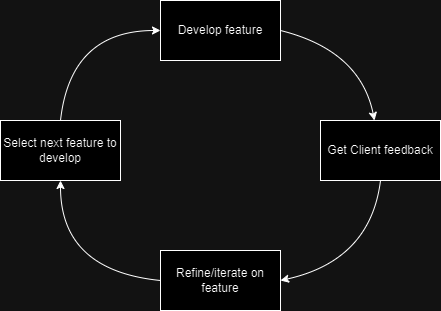
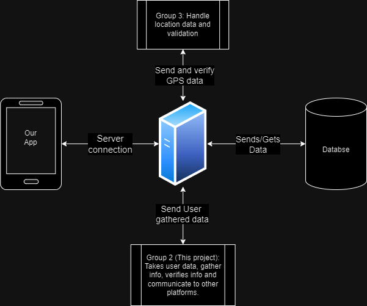

Description
The problem
Citizen science initiatives while mostly successful in more developed parts of the world, have fallen short at collecting data in less explored places like the southern hemisphere. This is due mainly to a lack of modern hardware capable of running citizen science software, but is also due to a lack of incentive for locals to go out and actually collect new data in their communities.
The solution
Our projects workload has been split into two capstone groups, group 2 (Forest Frames) and group 3 (Data Integrity). Together we have been tasked to create a citizen science app that can run on older hardware to collect data from less explored areas of the southern hemisphere. Our app is designed to verify collected data and contribute that information to other scientific databases. Once a user's data is verified, users could be provided incentives for going out and collecting information in there communities.
High level requirements
The current high priority requirements that we are working towards:
- Small and efficient app that users can have on their phones
- Compatibility with older phones
- Allow user to enter requested data and upload it
- Verify that uploaded data is usable and trustworthy
This is the overview of how we as a team intend on iterating and developing our product. We hope to develop a feature and have those that will use our app or our clients review what we develop to ensure it is what they want. We will then refine the developed feature further and move onto another feature where we will begin the process again.
Envisioned solution
We will initially work on a basic app so that a user can interface with our system. We then have a server where all data will be routed through and be connected to our database. It will also be analyzed by both teams to ensure the data is usabele and valid. The end goal of this project is once the data is verified to be trustworthy, the person who uploaded the data will recieve compensation. As more aspects of our project are desgined and implemented, this description will grow and more detailed diagrams will be implemented.
This is the current diagram of our proposed solution
More info to be added in the near future